Anthropic
Anthropic Research
정렬, 해석 가능성, 경제, 과학 등 Anthropic 연구 조직의 발표
과학적 발견을 위한 AI: 연구자들은 Claude를 어떻게 활용하는가
207,000개의 연구 세션을 분석하여 과학 분야에서 Claude가 어떻게 사용되는지, 어떤 작업에서 더 많이 활용되는지, 그리고 AI가 발견의 속도를 어떻게 높일 수 있는지 살펴보았습니다.

Claude, 블랙홀 물리학의 미해결 문제 두 가지를 해결하다

공동 취약점 공개 정책 일정 개편

강력한 안전성 평가 구축
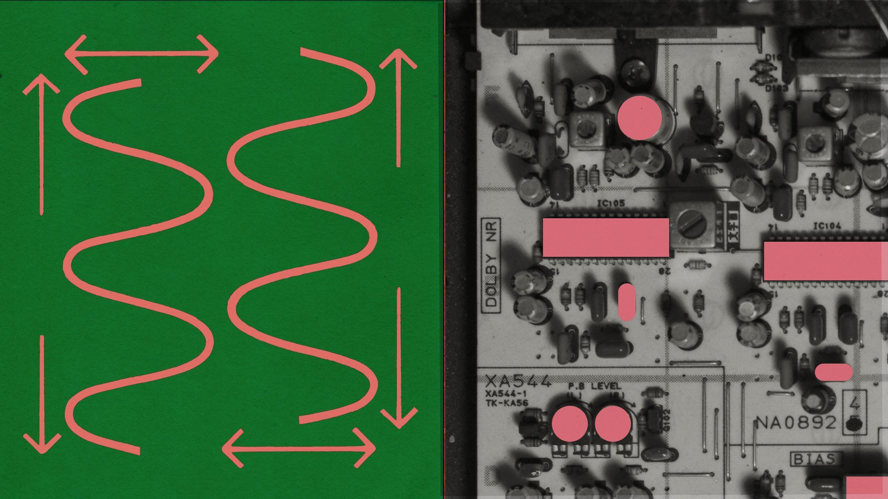
실제 전자 제품 설계에서 Claude 테스트하기
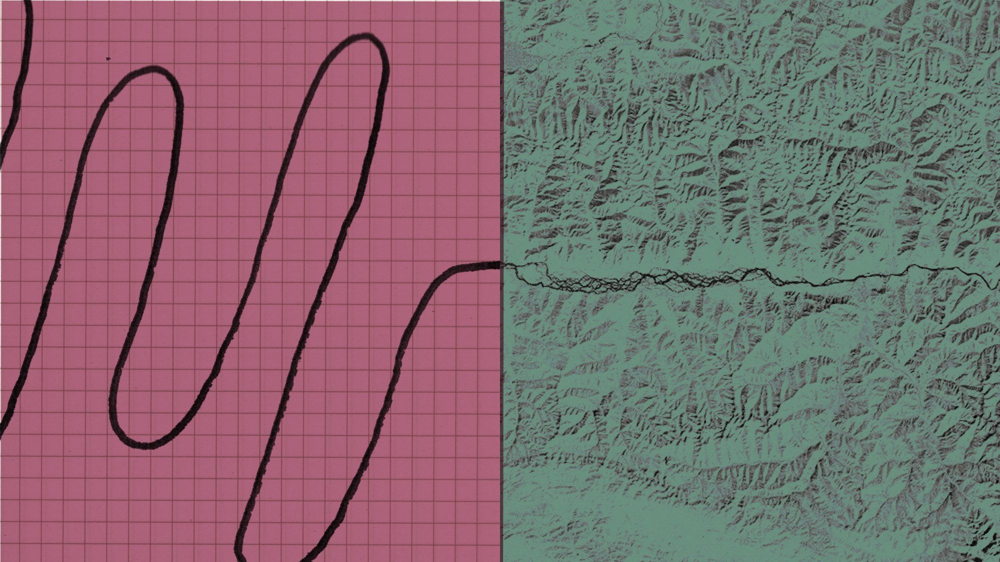
AI에게 과학적 모델 구축 가르치기
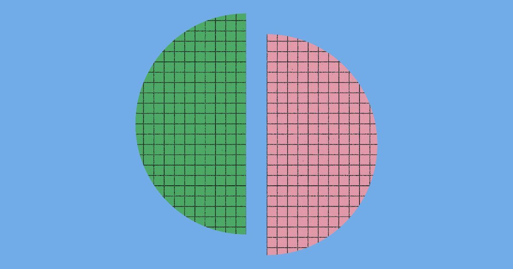
에이전트 메모리의 구성 요소
과학적 발견을 위한 AI: 연구자들은 Claude를 어떻게 활용하는가
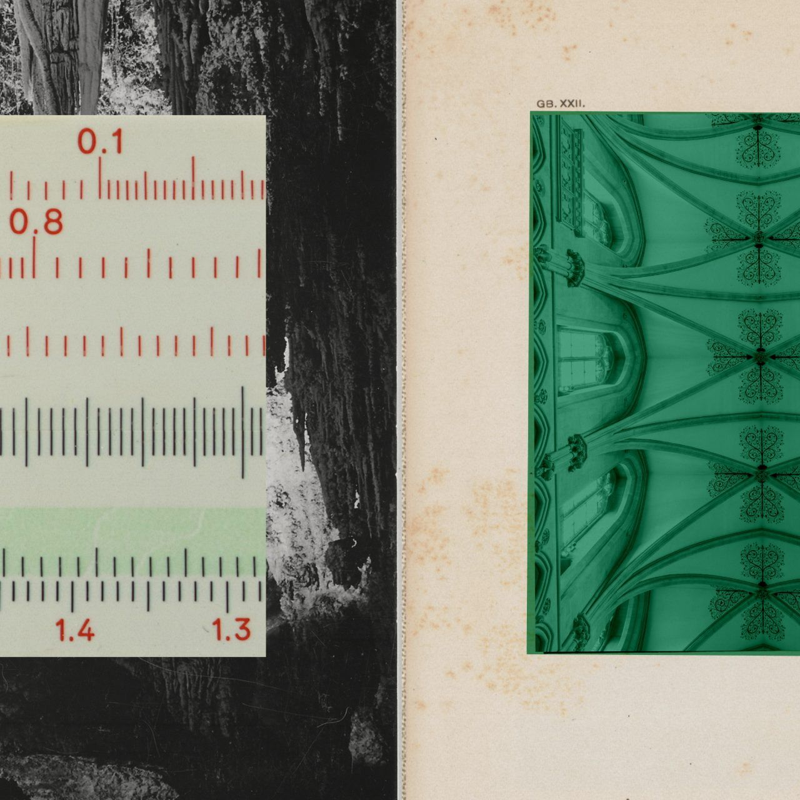
Claude로 볼트 입자(vault particle) 분석하기
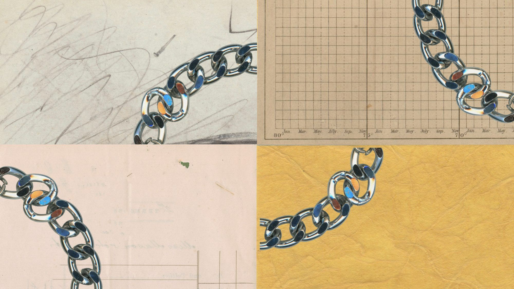
대규모 언어 모델의 검증 가능한 추론 연구 진행 상황
Claude를 활용한 신약 개발 가속화의 초기 진행 상황
AI 에이전트가 전문가의 판단에 미치는 영향
UK AISI 사이버 테스트 사고에 대한 정렬 평가
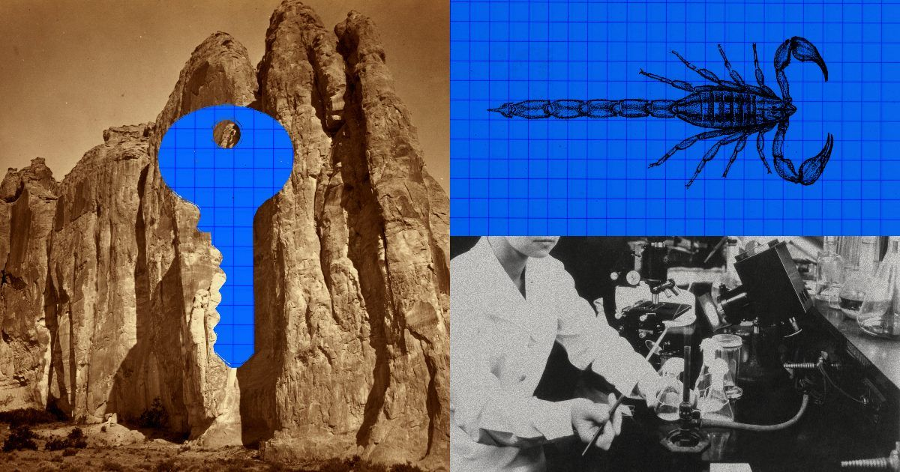
Claude의 전갈 신경독소 대상 단백질 바인더 설계 과정
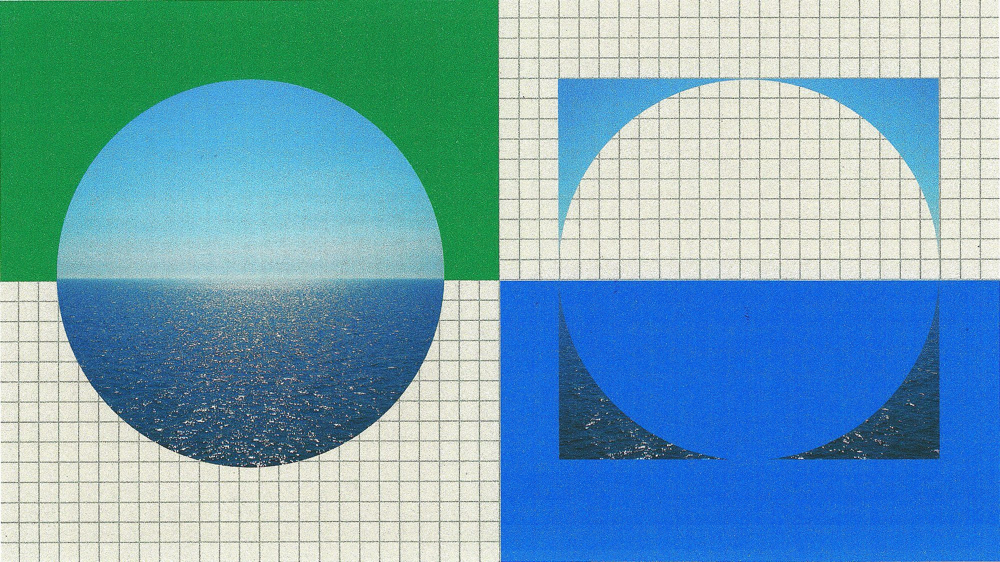
최전선에서의 경험이 미래에 대한 기대를 형성합니다
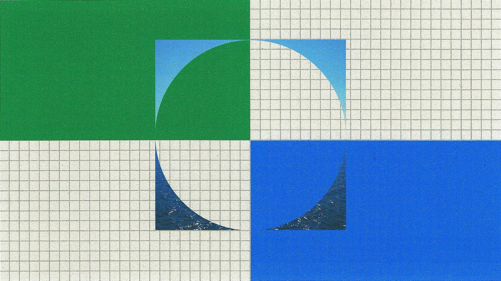
Anthropic의 고용 변화
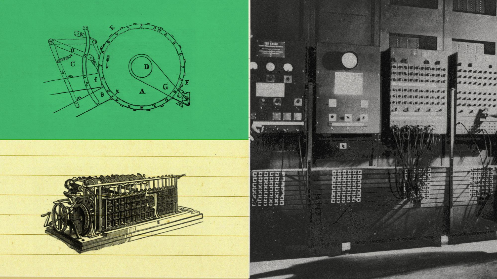
Claude로 더 효율적인 양자 회로 설계하기
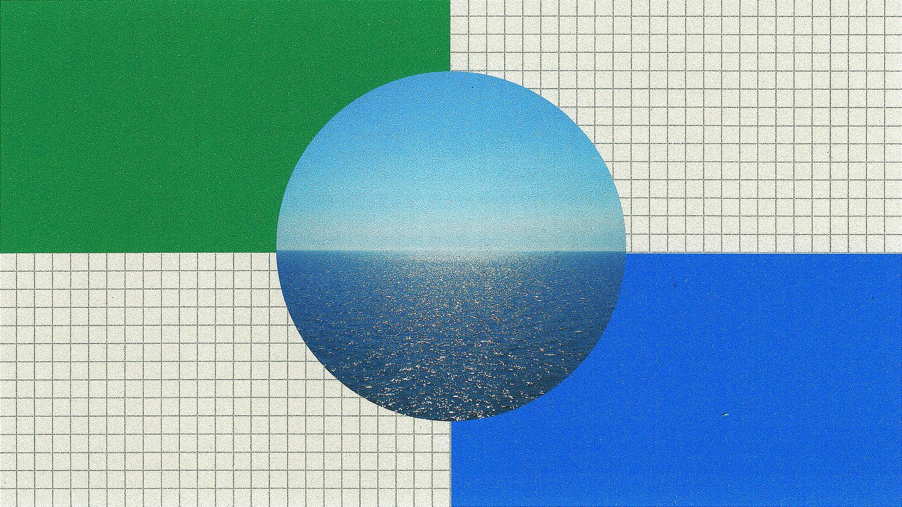
AI 기대 격차
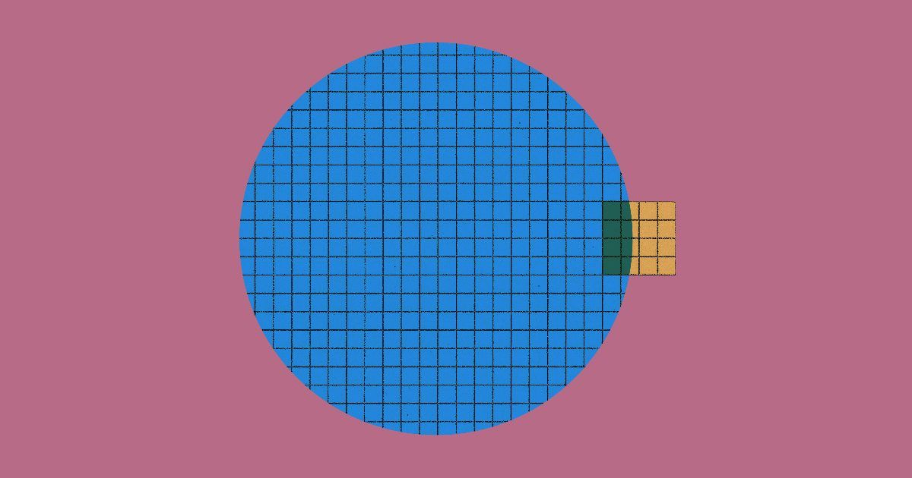
Anthropic의 소스 컨트롤 재설계
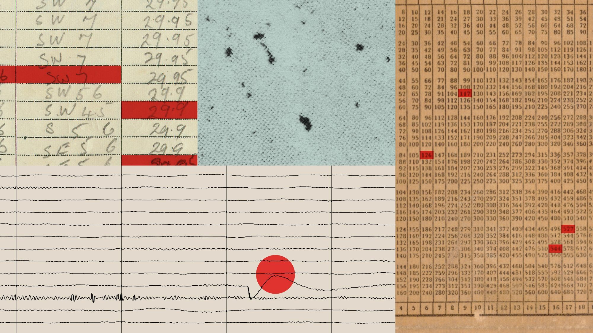
평가와 내부 사용 과정에서 나타난 의도치 않은 모델 동작 조사
하늘의 빠진 지도
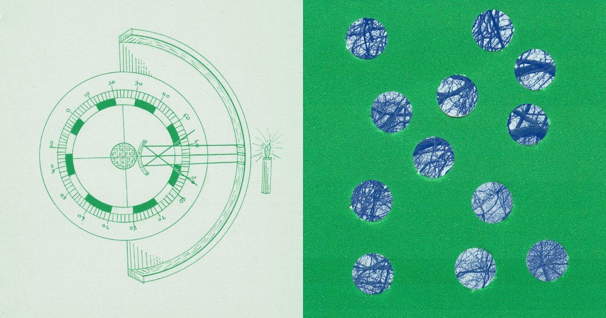
Claude에 맞는 과학
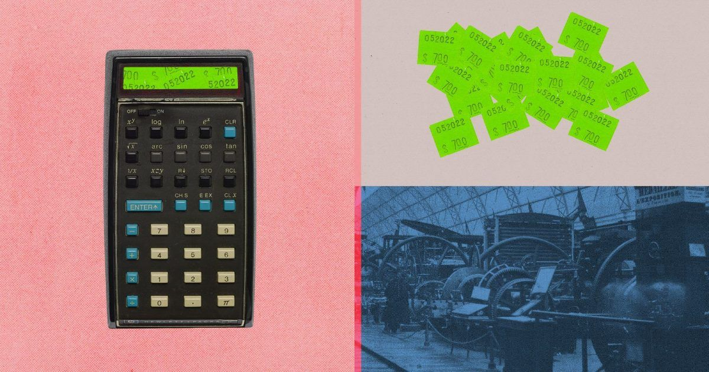
로봇은 어떤 일을 할 수 있을까?
AI에게 무엇을 바라십니까?
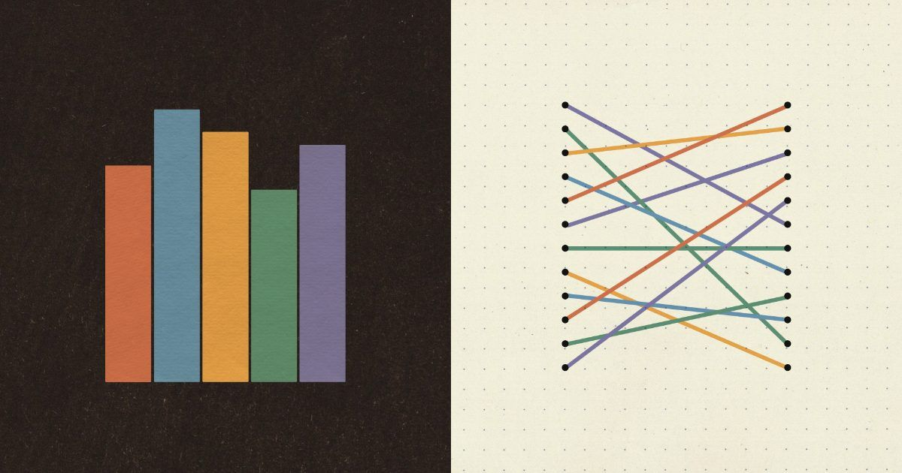
Project Swap: 에이전트가 우리를 대신해 거래하면 어떻게 될까요?
Claude, CRISPR와 유사한 반복 서열을 가진 새로운 효소 시스템 발견
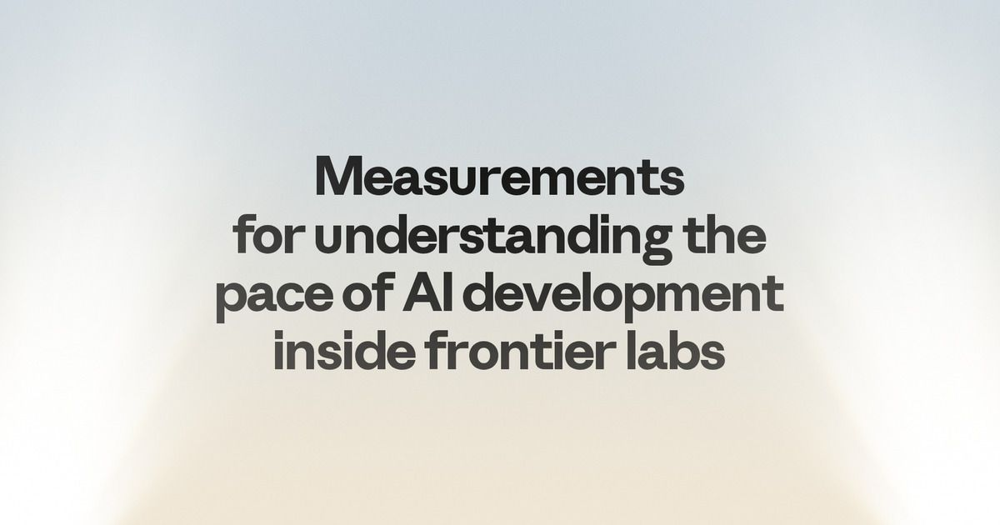
프런티어 연구소 내부의 AI 개발 속도를 파악하기 위한 측정 지표
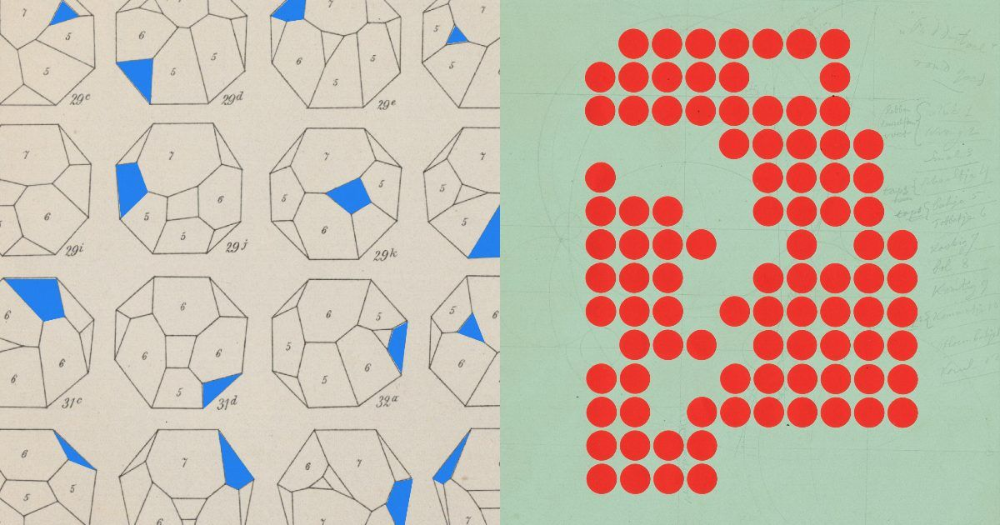
Claude가 생체분자 모델링을 발전시키는 방법
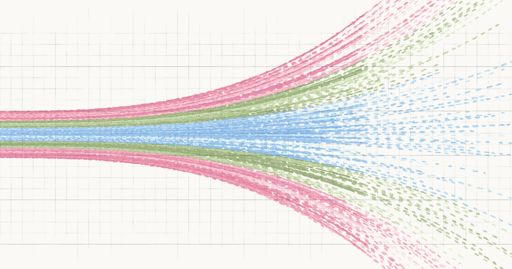